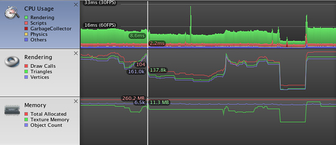

Profiler (Pro only)
The Unity Profiler helps you to optimize your game. It reports for you how much time is spent in the various areas of your game. For example, it can report the percentage of time spent rendering, animating or in your game logic.
You can play your game in the Editor with Profiling on, and it will record performance data. The Profiler window then displays the data in a timeline, so you can see the frames or areas that spike (take more time) than others. By clicking anywhere in the timeline, the bottom section of the Profiler window will display detailed information for the selected frame.
Note that profiling has to instrument your code. This instrumentation has a small impact on the performance of your game. Typically this overhead is small enough to not affect the game framerate. When using profiling it is typical to consider only the ratio (or percentage) of time spent in certain areas. Also, to improve performance focus on those parts of the game that consume the most time. Compare profiling results before and after code changes and determine the improvements you measure. Sometimes changes you make to improve performance might have a negative effect on frame rate; unexpected consequences of code optimization should be expected.

Profiler window
Attaching to Unity players
To profile your game running on an other device or a player running on another computer, it is possible to connect the editor to that other player. The dropdown Active Profiler will show all players running on the local network. These players are identified by player type and the host name running the player "iPhonePlayer (Toms iPhone)". To be able to connect to a player, the player must be launched with the Development Build checkbox found in the Build Settings dialog. From here it is also possible to tick a checkbox to make the Editor and Player Autoconnect at startup.
Profiler Controls

Profiler controls are in the toolbar at the top of the window. Use these to turn profiling on and off, navigate through profiled frames and so on. The transport controls are at the far right end of the toolbar. Note that when the game is running and the profiler is collecting data clicking on any of these transport controls will pause the game. The controls go to the first recorded frame, step one frame back, step one frame forward and go to the last frame respectively. The profiler does not keep all recorded frames, so the notion of the first frame should really be though of as the oldest frame that is still kept in memory. The "current" transport button causes the profile statistics window to display data collected in real-time. The Active Profiler popup menu allows you to select whether profiling should be done in the editor or a separate player (for example, a game running on an attached iOS device).
Deep Profiling
When you turn on Deep Profile, all your script code is profiled - that is, all function calls are recorded. This is useful to know where exactly time is spent in your game code.
Note that Deep Profiling incurs a very large overhead and uses a lot of memory, and as a result your game will run significantly slower while profiling. If you are using complex script code, Deep Profiling might not be possible at all. Deep profiling should work fast enough for small games with simple scripting. If you find that Deep Profiling for your entire game causes the frame rate to drop so much that the game barely runs, you should consider not using this approach, and instead use the approach described below. You may find deep profiling more helpful as you are designing your game and deciding how to best implement key features. Note that for large games deep profiling may cause Unity to run out of memory and so for this reason deep profiling may not be possible.
Manually profiling blocks of your script code will have a smaller overhead than using Deep Profiling. Use Profiler.BeginSample and Profiler.EndSample scripting functions to enable and disable profiling around sections of code.
View SyncTime
When running at a fixed framerate or running in sync with the vertical blank, Unity records the waiting time in "Wait For Target FPS". By default this amount of time is not shown in the profiler. To view how much time is spent waiting, you can toggle "View SyncTime". This is also a measure of how much headroom you have before losing frames.
Profiler Timeline

The upper part of the Profiler window displays performance data over time. When you run a game, data is recorded each frame, and the history of the last several hundred frames is displayed. Clicking on a particular frame will display it's details in the lower part of the window. Different details are displayed depending on which timeline area is currently selected.
The vertical scale of the timeline is managed automatically and will attempt to fill the vertical space of the window. Note that to get more detail in say the CPU Usage area you can remove the Memory and Rendering areas. Also, the splitter between the timeline and the statistics area can be selected and dragged downward to increase the screen area used for the timeline chart.
The timeline consists of several areas: CPU Usage, Rendering and Memory. These areas can be removed by clicking the close button in the panel, and re-added again using the Add Area drop down in the Profile Controls bar.
CPU Usage Area

The CPU Usage area displays where time is spent in your game. When it is selected, the lower pane displays hierarchical time data for the selected frame.
- Hierarchy mode: Displays hierarchical time data.
- Group Hierarchy mode: Groups time data into logical groups (Rendering, Physics, Scripts etc.). Because children of any group can be in different group (e.g. some script might call rendering functions), the percentages of group times often add up to more than 100%. (This is not a bug.)
The way the CPU chart is stacked can be reordered by simply dragging chart labels up & down.
When an item is selected in the lower pane, it's contribution to the CPU chart is highlighted (and the rest are dimmed). Clicking on an item again de-selects it.

Shader.SetPass is selected and it's contribution is highlighted in the chart.
In the hierarchical time data the self time refers to the amount of time spent in a particular function not including the time spent calling sub-functions. In the screenshot above, for example 51.2% of time is spent in the Camera.Render function. This function does a lot of work and calls the various drawing and culling functions. Excluding all these functions only 0.8% of time is spent actually in the Camera.Render function.
Rendering Area

The Rendering area displays rendering statistics. The Number of Draw Calls, Triangles and Vertices rendered is displayed graphical in the timeline. The Lower pane displays more rendering statistics and these more closely match the ones shown in the GameView Rendering Statistics window.
Memory Area

The Memory area displays some memory usage data:
- Total Allocated is the total RAM used by the application. Note that in the Unity Editor this is memory used by everything in the editor; game builds will use much less.
- Texture Memory is the amount of video memory used by the textures in the current frame.
- Object Count is the total number of Objects that are created. If this number rises over time then it means your game is creating some objects that are never destroyed.
Audio Area

The Audio area displays audio statistics:
- Playing Sources is the total playing sources in the scene at a specific frame. Monitor this to see if audio is overloaded.
- Paused Sources is the total paused sources in the scene at a specific frame.
- Audio Voice is the actually number of audio (FMOD channels) voices used. PlayOneShot is using voices not shown in Playing Sources.
- Audio Memory is the total RAM used by the audio engine.
CPU usage can be seen in the bottom. Monitor this to see if Audio alone is taking up too much CPU.
Note: When an audio asset in Ogg Vorbis format is imported with the Compressed In Memory option, the memory usage reported by the profiler may be unexpectedly low. This happens for platforms that use FMOD audio - FMOD doesn't support Ogg Vorbis with the Compressed In Memory option, so the import setting is silently changed to Stream From Disk (which has much lower memory overheads).
Physics Area

The Physics area shows the following statistics about the physics in the scene:-
- Active Rigidbodies is the number of rigidbodies that are not currently sleeping (ie, they are moving or just coming to rest).
- Sleeping Rigidbodies is the number of rigidbodies that are completely at rest and therefore don't need to be updated actively by the physics engine (see Rigidbody Sleeping for further details).
- Number of Contacts is the total number of points of contact between all colliders in the scene.
- Static Colliders is the number of colliders attached to non-rigidbody objects (ie, objects which never move under physics).
- Dynamic Colliders is the number of colliders attached to rigidbody objects (ie, objects which do move under physics).
GPU Area

The GPU profiler is similar to the CPU profiler with the various contributions to rendering time shown as a hierarchy in the bottom panel. Selecting an item from the hierarchy will show a breakdown in the panel to the right.
Please note that on the Mac, GPU profiling is only available under OSX 10.7 Lion and later versions.
See Also
Android
Remote profiling can be enabled on Android devices through two different paths : WiFi or ADB.
For WiFi profiling, follow these steps:
- Make sure to disable Mobile Data on your Android device.
- Connect your Android device to your WiFi network.
- Check the "Autoconnect Profiler" checkbox in Unity's build settings dialog.
- Attach your device to your Mac/PC via cable and hit "Build & Run" in Unity Editor.
- When the app launches on the device, open the profiler window in Unity Editor (Window->Profiler)
- If the Unity Editor fails to autoconnect to the device, select the appropriate device from the Profiler Window Active Profiler drop down menu.
Note: The Android device and host computer (running the Unity Editor) must both be on the same subnet for the device detection to work.
For ADB profiling, follow these steps:
- Attach your device to your Mac/PC via cable and make sure ADB recognizes the device (i.e. it shows in adb devices list).
- Open a Terminal window / CMD prompt and enter
adb forward tcp:54999 localabstract:Unity-<insert bundle identifier here>
- Check the "Development Build" checkbox in Unity's build settings dialog, and hit "Build & Run".
- When the app launches on the device, open the profiler window in Unity Editor (Window->Profiler)
- Select the AndroidProfiler(ADB@127.0.0.1:54999) from the Profiler Window Active Profiler drop down menu.
Note: The entry in the drop down menu is only visible when the selected target is Android.
If you are using a firewall, you need to make sure that ports 54998 to 55511 are open in the firewall's outbound rules - these are the ports used by Unity for remote profiling.
Page last updated: 2012-10-31